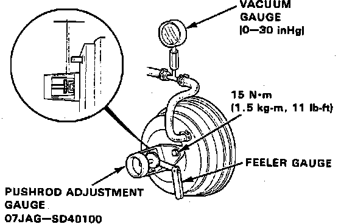

Vacuum Brake Booster: Adjustments
Fig. 6 Brake Booster Clearance Adjustment:

1. Remove master cylinder, refer to Service and Repair.
2. Using pushrod adjustment gauge tool No. 07JAG-SD40100 or equivalent, adjust bolt so top is flush with master cylinder piston.
3. Install pushrod adjustment gauge tool upside down on booster, Fig. 6.
4. Install master cylinder.
5. Connect suitable vacuum gauge to booster engine vacuum supply, then maintain engine speed that will deliver 20 inch Hg vacuum, Fig. 6.
6. Using suitable feeler gauge measure clearance between gauge body and adjusting nut, Fig. 6. Refer to Specifications / Mechanical for clearance specifications.
7. If clearance is not as indicated, loosen star locknut and turn adjuster in or out to adjust. Hold clevis while adjusting.